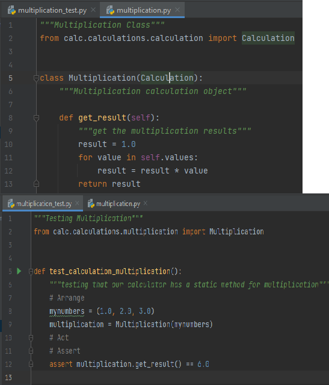

OOPS CONCEPTS IN PROJECT 2
Encapsulation is a way to ensure security. Basically, it hides the data from the access of outsiders.
Such as if an organization wants to protect an object/information from unwanted access by clients or any unauthorized person then encapsulation is the way to ensure this.
You can declare the methods or the attributes protected by using a single underscore ( _ ) before their names.
Such as- self._name or def _method( ); Both of these lines tell that the attribute and method are protected and should not be used
outside the access of the class and sub-classes but can be accessed by class methods and objects.
Though Python uses ‘ _ ‘ just as a coding convention, it tells that you should use these attributes/methods within the scope of the class.
But you can still access the variables and methods which are defined as protected, as usual.
Now for actually preventing the access of attributes/methods from outside the scope of a class, you can use “private members“.
In order to declare the attributes/method as private members, use double underscore ( __ ) in the prefix. Such as – self.__name or def __method();
Both of these lines tell that the attribute and method are private and access is not possible from outside the class.

here if we see the above figure we observe that "test_calculation_multiplication" method is accessing the encapsulated method. So it created the object of the class and
calling the method by class name
Inheritance is the procedure in which one class inherits the attributes and methods of another class.
The class whose properties and methods are inherited is known as Parent class. And the class that inherits the properties from the parent class is the Child class.
The interesting thing is, along with the inherited properties and methods, a child class can have its own properties and methods.
from the above figure we can see that class "calculation" is parent class and class "addition is child class" addition is inheriting the features of calculation class so
that it can use its methods and variables
Methods in Python can be called with zero, one, or more parameters. This process of calling the same method in different ways is called method overloading.
It is one of the important concepts in OOP. Two methods cannot have the same name in Python;
hence method overloading is a feature that allows the same operator to have different meanings.
Overloading is a method or operator that can do different functionalities with the same name.
Advantages of method overloading in python
reduces complexities
improves the quality of the code
is also used for reusability and easy accessibility
here in the above figure if we observe "get_last_calculation_result()" is accessed multiple times in different methods for different functionality i.e method
"add_number()" is using it to save the added data of the last calculation and "subtract_number" is using to save the subtracted data of the last calculation.
they are using the same method for their purposes
Method overriding is an ability of any object-oriented programming language that allows a subclass or child class to provide a specific implementation
of a method that is already provided by one of its super-classes or parent classes. When a method in a subclass has the same name, same parameters or
signature and same return type(or sub-type) as a method in its super-class, then the method in the subclass is said to override the method in the super-class.
The version of a method that is executed will be determined by the object that is used to invoke it. If an object of a parent class is used to invoke the method,
then the version in the parent class will be executed, but if an object of the subclass is used to invoke the method, then the version in the child class will be executed.
In other words, it is the type of the object being referred to (not the type of the reference variable) that determines which version of an overridden method will be executed.
if you observe the above figure get_result() which is class "claculation's" method is inherited by the child classes "division" and "multiplication" and they implement the same method in different ways
they are overriding the methods and using them in their way. class "division" is returning the divided result and class "multiplication" is returning the multiplied result
Abstraction in Python Abstraction is used to hide the internal functionality of the function from the users. The users only interact with the basic implementation of the function, but inner working is hidden. User is familiar with that "what function does" but they don't know "how it does." In simple words, we all use the smartphone and very much familiar with its functions such as camera, voice-recorder, call-dialing, etc., but we don't know how these operations are happening in the background. Let's take another example - When we use the TV remote to increase the volume. We don't know how pressing a key increases the volume of the TV. We only know to press the "+" button to increase the volume. That is exactly the abstraction that works in the object-oriented concept. Why Abstraction is Important? In Python, an abstraction is used to hide the irrelevant data/class in order to reduce the complexity. It also enhances the application efficiency. Next, we will learn how we can achieve abstraction using the Python program.